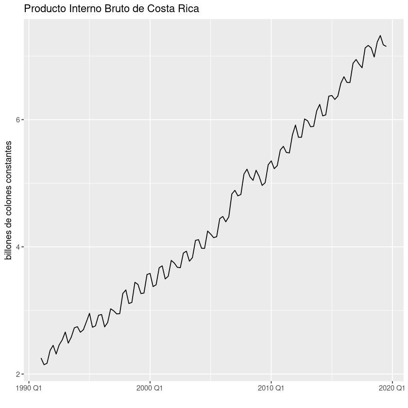

Transformaciones con R¶
Cálculo de transformaciones de la serie del PIB de Costa Rica
Importar las librerías necesarias
library(readr)
library(fpp3)
library(slider)
#library(ggplot2)
── Attaching packages ──────────────────────────────────────────────────────────────────────────────────────────────────────────────────────────────────────────── fpp3 0.4.0 ──
✔ tibble 3.1.0 ✔ tsibble 1.0.0
✔ dplyr 1.0.5 ✔ tsibbledata 0.3.0
✔ tidyr 1.1.3 ✔ feasts 0.1.7
✔ lubridate 1.7.10 ✔ fable 0.3.0
✔ ggplot2 3.3.3
── Conflicts ───────────────────────────────────────────────────────────────────────────────────────────────────────────────────────────────────────────────── fpp3_conflicts ──
✖ lubridate::date() masks base::date()
✖ dplyr::filter() masks stats::filter()
✖ tsibble::intersect() masks base::intersect()
✖ tsibble::interval() masks lubridate::interval()
✖ dplyr::lag() masks stats::lag()
✖ tsibble::setdiff() masks base::setdiff()
✖ tsibble::union() masks base::union()
Leer datos del PIB trimestral de Costa Rica e indexar datos como serie de tiempo
datos <- read_csv("../data/CR-PIB.csv") %>%
mutate(trimestre = yearquarter(periodo)) %>%
as_tsibble(index=trimestre) %>%
select(trimestre, pib)
── Column specification ────────────────────────────────────────────────────────────────────────────────────────────────────────────────────────────────────────────────────────
cols(
periodo = col_character(),
pib = col_double()
)
Datos originales
datos %>% autoplot(pib) +
labs(title = "Producto Interno Bruto de Costa Rica") +
ylab("billones de colones constantes") + xlab(" ")

Primera diferencia
datos %>% mutate(Dpib=difference(pib)) %>%
autoplot(Dpib) +
labs(title = "Cambio trimestral en el PIB de Costa Rica") +
ylab("billones de colones constantes") + xlab(" ")
Warning message:
“Removed 1 row(s) containing missing values (geom_path).”
Tasa de variación
datos %>% mutate(growth=100* difference(pib) / lag(pib)) %>%
autoplot(growth) +
labs(title = "Tasa de crecimiento trimestral del PIB de Costa Rica") +
ylab("por ciento") + xlab(" ")
Warning message:
“Removed 1 row(s) containing missing values (geom_path).”
Tasa de variación continua
datos %>% mutate(growth=100* difference(log(pib))) %>%
autoplot(growth) +
labs(title = "Tasa de crecimiento trimestral del PIB de Costa Rica") +
ylab("por ciento") + xlab(" ")
Warning message:
“Removed 1 row(s) containing missing values (geom_path).”
Cambio interanual
datos %>% mutate(growth=100* difference(pib, lag=4) / lag(pib)) %>%
autoplot(growth) +
labs(title = "Cambio interanual en el PIB de Costa Rica") +
ylab("billones de colones constantes") + xlab(" ")
Warning message:
“Removed 4 row(s) containing missing values (geom_path).”
Tasa de variación interanual
datos %>% mutate(growth=100* difference(log(pib), lag=4)) %>%
autoplot(growth) +
labs(title = " de crecimiento interanual del PIB de Costa Rica") +
ylab("por ciento") + xlab(" ")
Warning message:
“Removed 4 row(s) containing missing values (geom_path).”
Serie suavizada
datos %>% mutate(suave=slide_dbl(pib, mean, .before=4, .complete=TRUE)) %>%
select(trimestre, pib, suave) %>%
gather() %>%
autoplot() + geom_line() +
labs(title = "Producto Interno Bruto de Costa Rica") +
ylab("billones de colones constantes") + xlab(" ")
Plot variable not specified, automatically selected `.vars = value`
Warning message:
“Removed 4 row(s) containing missing values (geom_path).”
Warning message:
“Removed 4 row(s) containing missing values (geom_path).”